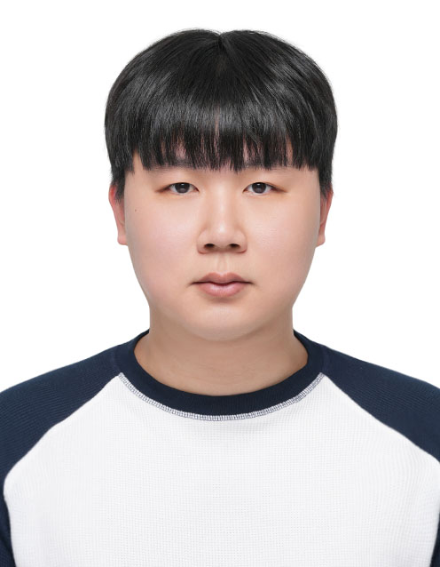

seagullcjung [at] gmail [dot] com
CV /
Google Scholar
/ Github
I am a researcher at the CVPR Lab at Keimyung University in South Korea. My research interests include robot learning, imitation learning, visuomotor policies, and world models. Recently, I have been working on diffusion and flow-based approaches for behavior cloning.
I started with action recognition with graph neural networks and transitioned to motion genration. I'm currently working on imitation learning for manipulation.
* = equal contribution.
Chanhyuk Jung, Jongbin Choi, Sungkeunn Yoo, and Byoung
Chul Ko
Under Review
website
Dasom Ahn*, Chanhyuk Jung*, Joonki Baek, Sungkeun Yoo,
and Byoung Chul Ko
ICRA, 2026
Oral Presentation (Top 4%)
website /
code
Chanhyuk Jung*, Sangwon Kim*, Dasom Ahn, In-su Jang,
Kwang-Ju Kim, Sungkeun Yoo, and Byoung Chul Ko
ICRA FMNS Workshop, 2025
paper
/
poster
Chanhyuk Jung*, Sangwon Kim*, Dasom Ahn, In-su Jang,
Kwang-Ju Kim, Sungkeun Yoo, and Byoung Chul Ko
ICCV Workshop, 2025
paper
Seon-Bin Kim, Chanhyuk Jung, Byeong-Il Kim, and Byoung
Chul Ko
Sensors, 2022
paper
Recently grduated with a B.S. in Computer Engineering.
Keimyung University (Mar. 2021 - Feb. 2026)
B.S. in Computer Engineering